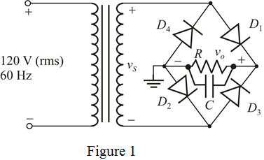

(b)
Write the formula for ripple voltage.

Substitute 60 Hz for  ,
,  for
for  , 16 V for
, 16 V for  to calculate the capacitor value.
to calculate the capacitor value.
Therefore, the required value of filter capacitor is .
(a)
Draw the full wave bridge rectifier circuit according to data.

In the bridge rectifier in Figure 1, two diodes either or conduct at any time.
The average dc output voltage is,
The allowed ripple voltage is,
Calculate the maximum peak voltage.
Due to positive half cycle, the diodes are forward biased or conduct and the diodes are reverse biased or do not conduct.
Due to negative half cycle, the diodes are forward biased or conduct and the diodes are reverse biased or do not conduct.
Here, each diode has 0.7 V voltages drop. In either cycle, two diodes conduct.
Now, calculate the voltage across secondary winding.
Calculate the rms voltage across the secondary winding.
Therefore, the transformer secondary rms voltage is .
(b)
Write the formula for ripple voltage.
Substitute 60 Hz for , for , 16 V for to calculate the capacitor value.
Therefore, the required value of filter capacitor is .
(c)
The maximum reverse voltage occurs when the secondary voltage is at its peak value.
Calculate the maximum reverse voltage.
Therefore, the maximum reverse voltage is .
Therefore, the peak inverse voltage of the diode is .
Using the safety factor 1.5, the peak inverse voltage for the diode is,
Therefore, the peak inverse voltage using safety factor is .
(d)
Write the formula for an average diode current during the diode conduction.
Substitute 15 V for  ,
,  for
for  , 16 V for
, 16 V for  , and
, and  for
for  .
.
Therefore, the average diode current is .
(e)
Write the formula for the peak diode current.
Substitute 15 V for  ,
,  for
for  , 16 V for
, 16 V for  , and
, and  for
for  .
.
Therefore, the peak diode current is .